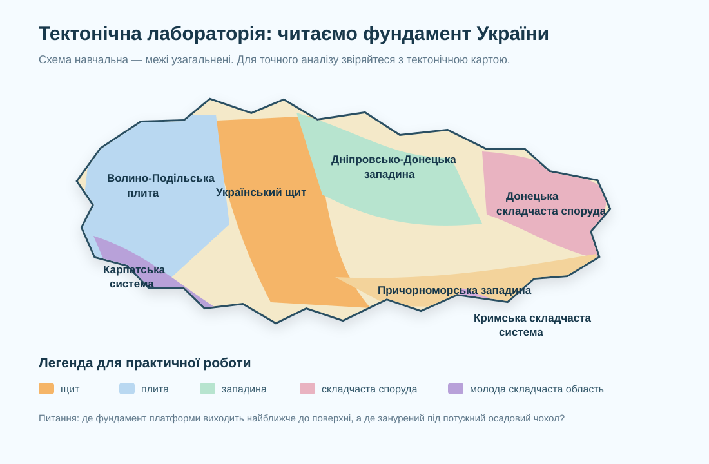

Чому гори, западини й землетруси не розкидані випадково?
Місія: за тектонічною картою пояснити, де в Україні кристалічний фундамент піднятий, де занурений, де кора була сильно зім’ята, а де сучасні рухи створюють підвищену сейсмічну небезпеку.
Де Ви очікували б найдавніші й найстабільніші ділянки земної кори: в Карпатах, у центральній частині України чи вздовж Чорного моря?
Картографічне розслідування: різні карти — різні докази
Не можна встановити тектонічну структуру лише за кольором фізичної карти. Порівняйте картографічні джерела, підпишіть, які дані вони показують, а які — ні.

Вивчайте розломи, прогини, щити, складчасті структури. Точні позначення — у першоджерелі.
Відкрити оригінал і легенду ↗

Дозволяє порівняти височини, низовини й гірські території.
Відкрити оригінал і легенду ↗
Перемикайте чотири тематичні шари й досліджуйте сім структур
Це навчальна схема з узагальненими межами, а не точна тектонічна карта. Позначки допомагають знайти розміщення структур і сформулювати питання до реального атласу.

Побачите пояснення тектонічної структури.
Схеми рельєфу, ресурсів і сейсмічності — концептуальні, а не точна статистика або географічні межі. Для доказів відкривайте справжні картографічні джерела вище.
Чотири геологічні малюнки: що під поверхнею?
Тектонічна карта: не кольоровий фон, а модель будови кори
Порівняйте схему з реальною тектонічною картою України. На карті виділяються платформи, щити, плити, западини, складчасті області, розривні порушення та інші структури.
Тектонічна карта України ↗Геологічна будова України ↗7 структур, які треба не просто назвати, а зрозуміти
Фундамент давньої платформи піднятий і місцями виходить близько до поверхні. Саме тому тут багато відслонень кристалічних порід.
Кристалічний фундамент перекритий осадовим чохлом. На карті це вже не «щит», хоча платформа та сама.
Глибока зона прогину й розтягування земної кори з потужною товщею осадових порід.
Ділянка інтенсивних деформацій і складчастості, пов’язана з давнішими етапами тектонічного розвитку.
Молода складчаста область, де тектонічні рухи значно активніші, ніж на більшій частині давньої платформи.
Зона занурення фундаменту з потужним осадовим чохлом на півдні України.
Складчаста область півдня України, геодинамічно пов’язана із Середземноморсько-Альпійським поясом.
Де тектоніка стає питанням безпеки?
Сейсмічність України неоднакова. Для навчальної моделі виділіть підвищену увагу до Карпатського регіону, південного заходу, Криму та прилеглої акваторії Чорного моря. Але не плутайте «підвищену сейсмічну небезпеку» з прогнозом конкретного землетрусу.
Актуальний сейсмічний моніторинг України ↗Сейсмічне районування ↗Розмістіть назви 7 структур безпосередньо на карті
Перетягуйте написи на відповідні позначки. На телефоні можна торкнутися назви, а потім точки; це також працює з клавіатури. Якщо помилилися — оберіть інший напис і замініть його.
Чотири наукові суперечки: відрізняємо твердження від доказу
Практична робота на 10 балів
Домашній тест: 10 різнорівневих завдань, автоматична перевірка
Потрібно порівнювати карти та доводити висновки. У двох завданнях правильних відповідей декілька; зайві варіанти не зараховуються.
Картка результату
Тема: Тектонічна будова України
Зробіть скриншот картки й надішліть учителю.
Два україномовні пояснення — з картами та прикладами
Основні тектонічні структури. Зв’язок рельєфу з тектонічною будовою.
Відкрити окремо ↗Фрагмент 2:15–5:30: структури, карта і зв’язок із рельєфом.
Відкрити окремо ↗Доведіть, а не просто назвіть
Теза: «Тектонічна карта допомагає пояснити сучасний рельєф і частково оцінити природні ризики України».
Домашнє завдання: §14 (перевірте параграф за Вашим виданням підручника); перегляньте навчальне відео, виконайте новий тест /10 і надішліть скриншот картки. Оберіть один регіон України, порівняйте його тектоніку та рельєф за двома картами.
Зробіть власну тектонічну картку регіону
За тектонічною картою визначте структуру, на якій розташована Ваша область або найближча доступна для аналізу територія. Запишіть: 1) назву структури; 2) тип; 3) що відбувається з фундаментом; 4) яку форму рельєфу Ви очікуєте побачити; 5) один факт, який треба перевірити за картою рельєфу.
Тектонічна карта ↗Електронний підручник ↗